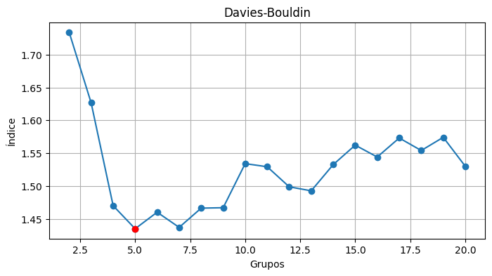
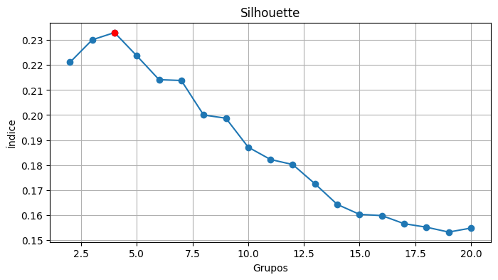
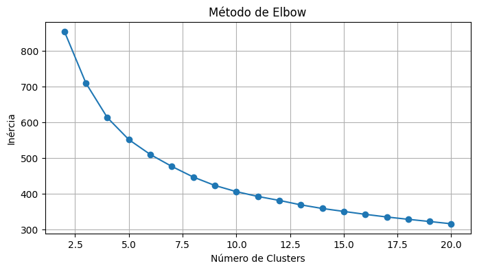

A análise de agrupamentos é uma técnica exploratória que visa identificar estruturas intrínsecas nos dados não rotulados. Essas técnicas são usadas para avaliar a qualidade dos agrupamentos e ajudar na interpretação dos resultados, auxiliando na tomada de decisões sobre o número ideal de clusters e na validação dos agrupamentos obtidos.
Configuração de dados
# Importando biblioteca pandasimport pandas as pd# Importando classe MinMaxScaler da biblioteca scikit-learnfrom sklearn.preprocessing import MinMaxScaler# Importando dadosdf = pd.read_csv('dados/banana_quality.csv')# Excluindo coluna qualitativadf = df.drop('Quality', axis=1)for coluna in df.columns:# Calculando mediana mediana_coluna = df[coluna].median()# Substitui os valores nulos pela mediana da coluna usando loc df.loc[df[coluna].isnull(), coluna] = mediana_coluna# Normalizando dados df[coluna] = MinMaxScaler().fit_transform(df[[coluna]])# Visualizando dadosdf.head(3)
Size
Weight
Sweetness
Softness
HarvestTime
Ripeness
Acidity
0
0.380309
0.626747
0.680712
0.360975
0.567312
0.671933
0.543416
1
0.349951
0.628093
0.485275
0.293682
0.481689
0.646850
0.545720
2
0.478460
0.699448
0.572694
0.283811
0.499358
0.716580
0.617337
Davies-Bouldin Index
O Índice de Davies-Bouldin mede a similaridade média entre cada cluster e seu cluster mais próximo, avaliando a compactação e separação dos clusters. Quanto menor o índice, melhor a separação entre os clusters.
# Importando a classe KMeans do módulo cluster da biblioteca scikit-learnfrom sklearn.cluster import KMeans# Importando classe metrics da biblioteca scikit-learnfrom sklearn import metrics# Importando matplotlibimport matplotlib.pyplot as plt# Calculando Davies-Bouldin para diferentes valores de kvalores_de_db = []for k inrange(2, 21): km = KMeans(n_clusters=k, init='k-means++', max_iter=300, n_init=10, random_state=0) indice_db = metrics.davies_bouldin_score(df, km.fit_predict(df)) valores_de_db.append(metrics.davies_bouldin_score(df, km.fit_predict(df)))if k ==2: x_menor =2 y_menor = indice_dbif indice_db < y_menor: x_menor = k y_menor = indice_db# Plotando gráfico de Davies-Bouldinplt.figure(figsize=(8, 4))plt.plot(range(2, 21), valores_de_db, marker='o')plt.title('Davies-Bouldin')plt.xlabel('Grupos')plt.ylabel('Índice')plt.grid(True)plt.plot(x_menor, y_menor, 'ro')plt.show()

A conclusão do uso do método de Davies-Bouldin, é que o número ideal de agrupamentos é 5.
Silhouette Score
Calcula o quão similar um objeto é ao seu próprio cluster (coesão) em comparação com outros clusters (separação). O score varia de -1 a 1, onde valores próximos de 1 indicam que o objeto está bem ajustado ao seu cluster.
# Importando a classe silhouette_score do módulo metrics da biblioteca scikit-learnfrom sklearn.metrics import silhouette_score# Calculando silhouette para diferentes valores de kvalores_de_si = []for k inrange(2, 21): km = KMeans(n_clusters=k, init='k-means++', max_iter=300, n_init=10, random_state=0) indice_si = silhouette_score(df, km.fit_predict(df), metric='euclidean') valores_de_si.append(indice_si)if k ==2: x_menor =2 y_menor = indice_siif ((indice_si -1)**2)**(1/2) < ((y_menor -1)**2)**(1/2): x_menor = k y_menor = indice_si# Plotando gráfico de Davies-Bouldinplt.figure(figsize=(8, 4))plt.plot(range(2, 21), valores_de_si, marker='o')plt.title('Silhouette')plt.xlabel('Grupos')plt.ylabel('Índice')plt.grid(True)plt.plot(x_menor, y_menor, 'ro')plt.show()

A conclusão do uso do método Silhouette, é que o número ideal de agrupamentos é 4.
Método Elbow (do Cotovelo)
Ajuda a determinar o número ideal de clusters em um conjunto de dados, identificando o ponto de inflexão onde a adição de mais clusters não melhora significativamente a coesão intra-cluster.
# Calculando a inércia para diferentes valores de kinercias = []for k inrange(2, 21): km = KMeans(n_clusters=k, init='k-means++', max_iter=300, n_init=10, random_state=0) km.fit(df) inercias.append(km.inertia_)# Plotando o gráfico de Elbowplt.figure(figsize=(8, 4))plt.plot(range(2, 21), inercias, marker='o')plt.title('Método de Elbow')plt.xlabel('Número de Clusters')plt.ylabel('Inércia')plt.grid(True)plt.show()

A conclusão do uso do método Elbow, é que o número ideal de agrupamentos está entre 5 e 7.
Considerações Finais
A escolha do uso do método irá depender de uma série de fatores, que podem ser avaliados através de testes estatísticos ou de acurácia, visto que muitas vezes eles podem apresentar resultados contraditórios.